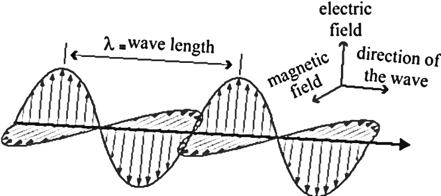

Free-surface distribution in a Kelvin gravity wave propagating into the plane of the paper (the x-direction) within a channel aligned with x-direction. The wave crests and troughs are enhanced on the right side of the channel.
1Transverse waves are characterised by the fact that the displacement caused by them is perpendicular to the direction of their movement .